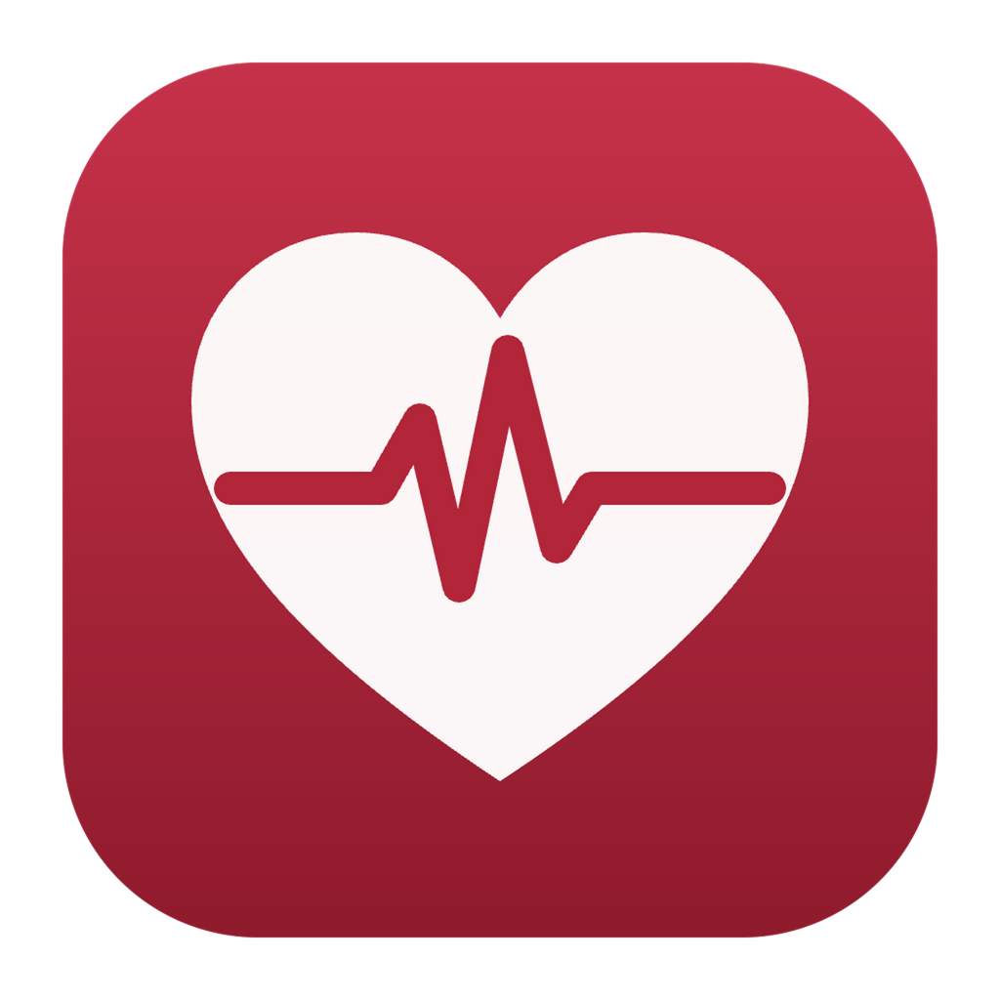
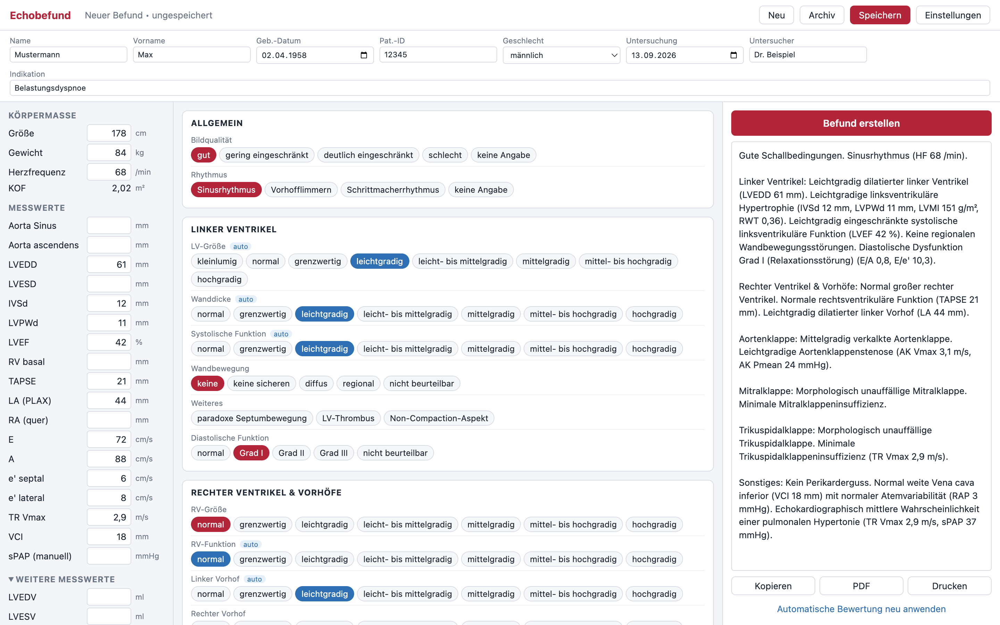

Befundassistent für die Echokardiographie. Messwerte eingeben, automatisch graduieren lassen, Befundtext erzeugen – und direkt an die Praxissoftware übergeben.

Schweregrade werden aus den Messwerten vorgeschlagen – geschlechtsspezifisch, nach editierbaren Grenzwerten. Ein Klick überschreibt den Vorschlag.
Formulierungen aus anpassbaren Textbausteinen, Messwerte im Text oder als Liste. Der Text landet sofort in der Zwischenablage.
KOF, LV-Masse/LVMI, RWT, LAVI, E/A, E/e′, RAP, sPAP, AÖF nach Kontinuitätsgleichung, DVI, Schlagvolumen und HZV.
Anklickbares 17-Segment-Modell für Hypo-, A- und Dyskinesien sowie Aneurysmen.
Patientendaten aus der Praxissoftware übernehmen und den Befund zurück in die Kartei senden – z. B. mit EOSWIN.
Befunde lokal speichern und wiederfinden, als PDF exportieren oder mit Praxis-Briefkopf drucken.
ZIP öffnen und Echobefund.app in den Ordner „Programme“ ziehen. Beim ersten Start: Rechtsklick → Öffnen und bestätigen (die App ist nicht bei Apple notarisiert).
Die .exe kann direkt gestartet werden, z. B. aus C:\Programme\Echobefund\. Bei der SmartScreen-Warnung: Weitere Informationen → Trotzdem ausführen.
Echobefund arbeitet als GDT-2.1-Gerät. Die Praxissoftware legt einen Auftrag in einem gemeinsamen Ordner ab und startet Echobefund; der fertige Befund geht per Klick zurück in die Kartei.
C:\GDT) und „Testen“..exe eintragen.| Austauschordner | in beiden Programmen identisch, z. B. C:\GDT oder \\SERVER\GDT |
|---|---|
| Datei EOSWIN → Echobefund | ECHOEOSW.GDT |
| Datei Echobefund → EOSWIN | EOSWECHO.GDT |
| GDT-IDs | ECHOBEF (Echobefund) · EOSWIN (Praxissoftware) |
| Satzarten | 6301/6302 (Auftrag) · 6310 (Befund zurück) · 6311 (Befund anzeigen) |
| Zeichensatz | automatisch wie im Auftrag (CP437, CP1252 oder 7 Bit) |
Kein Medizinprodukt. Die mitgelieferten Grenzwerte orientieren sich an den ASE/EACVI- und ESC-Empfehlungen; einige Abstufungen sind Vorschläge und in der App gekennzeichnet. Grenzwerte, Textbausteine und jeder erzeugte Befund müssen von der verantwortlichen Ärztin bzw. dem verantwortlichen Arzt geprüft werden.
Datenschutz. Echobefund arbeitet vollständig offline und sendet keine Daten ins Internet. Archiv und Einstellungen liegen unverschlüsselt auf dem Rechner – bitte Festplattenverschlüsselung (FileVault/BitLocker) aktivieren und das Archiv in die Datensicherung der Praxis aufnehmen.